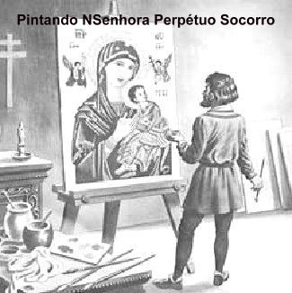
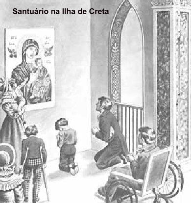
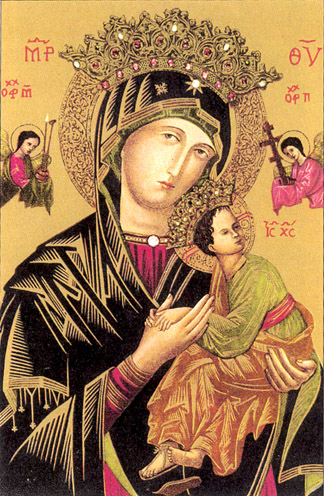
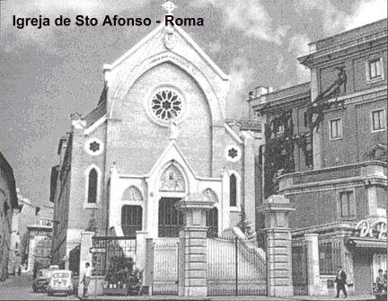
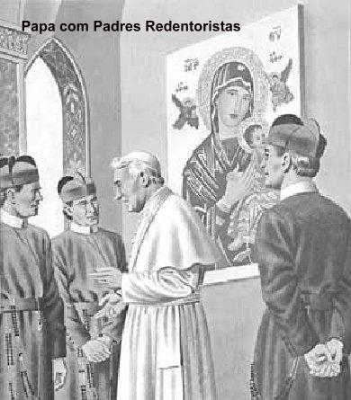

UMA LINDA HISTÓRIA
O ÍCONE DA VIRGEM
Muitos autores afirmam
que o primeiro Ícone de NOSSA SENHORA DO PERPÉTUO SOCORRO foi pintado em

Quando Lucas completou o Ícone, é tradição que ele deu de presente ao seu amigo pessoal e patrono Teófilo, e viajou em companhia de São Paulo, no prosseguimento do trabalho de evangelização.
Consta ainda de informações antigas, que em meados do século V, o Ícone da VIRGEM foi encontrado no Império Bizantino. Santa Pulquéria, que era Rainha e governava o país, ergueu um Santuário em honra da VIRGEM MARIA em Constantinopla, e segundo fontes fidedignas, aquele Ícone permaneceu lá por muitos anos, onde nossa MÃE SANTÍSSIMA era venerada por milhares de cristãos: reis, imperadores, santos e pecadores, homens, mulheres e crianças, ricos e pobres, e sobre todos derramava, uma quantidade incontável de graças, milagres e benefícios. Também neste período, se tem conhecimento de que já existia pelo menos uma copia do original, que se encontrava no salão imperial de audiências da Rainha em Constantinopla.
Por outro lado, desde tempos remotos, a arte sempre foi influenciada pela religiosidade popular, e mais especificamente nos séculos XII e XIII, com muito fervor foi colocada em grande evidência a Natureza Humana de JESUS, sendo divulgados com frequência os sofrimentos da Paixão, o Drama do Calvário do SENHOR e as Dores de NOSSA SENHORA. Aqueles fatos tristes e terríveis centralizavam a devoção das pessoas, que pelo cultivo deles, revelavam a grandeza de seu piedoso amor e carinho a JESUS e a VIRGEM MARIA. Neste sentido, dois grandes Santos da época contribuíram exercendo uma forte influência com suas pregações, para que existisse de fato um acentuado exercício da devoção aos sofrimentos do SENHOR: foram São Bernardo de Claraval e São Francisco de Assis.
E esta ênfase foi sentida principalmente no Oriente, através da obra evangelizadora dos Padres Franciscanos. E desta realidade, resultou o aparecimento de uma manifestação artística denominada “Kardiotissa”, derivada da palavra grega (kardia ou kardio, que significa coração). Assim, a denominação artística “Kardiotissa” ou “Kariotissa” significava (revelar misericórdia e piedade, mostrar um sentimento de compaixão). Então, esta corrente de pintores colocava as imagens sacras de seus quadros, expressando algum tipo de dor e sofrimento em relação à Paixão do SENHOR.
Historicamente fomos encontrar informações fidedignas relacionadas à pintura de São Lucas, somente a partir desta época, e mais precisamente no ano 1207, num despacho do Papa Inocêncio III, em face da admirável quantidade de milagres que NOSSO SENHOR realizava, pela intercessão de sua MÃE, representada numa pintura em madeira, com o MENINO JESUS ao colo, que afirmavam ser a pintura de São Lucas. Sua Santidade o Papa declarou que “verdadeiramente a alma de MARIA parecia se encontrar na imagem, uma vez que era tão bonita e tão milagrosa”.
Segundo afirma a tradição, São Lucas era grego, da mesma maneira que os seus pais. Assim o estilo bizantino originário daquela região, estava por assim dizer, no seu sangue. Então, nos séculos XII, XIII e XIV, os pintores fizeram diversas cópias em madeira e tela, criando o Ícone de NOSSA SENHORA DO PERPÉTUO SOCORRO, procurando mesclar o estilo bizantino de Bizâncio, com aquela nova manifestação artística, buscando colocar expressões de sofrimento, dor e expectativa, nas faces da VIRGEM MARIA e do MENINO DEUS.
Importante, todavia, era que o poder da graça Divina continuava operando de maneira notável naqueles Ícones benzidos e consagrados, que se tornaram verdadeiros intercessores milagrosos. A VIRGEM MÃE DE DEUS continuou vivendo naquelas imagens, ajudando, socorrendo as necessidades das pessoas, protegendo, inspirando, e estimulando todos os seus filhos que buscavam a ternura de seu inefável afeto e tão querido amor.
Entretanto o Ícone original desapareceu misteriosamente. A tradição comenta que foi durante o cerco de Constantinopla.
A conquista da capital bizantina pelo Império Otomano, no dia 29 de Maio de 1453, causou o desaparecimento de diversas relíquias cristãs, de valor inestimável. Descreve a tradição que na véspera da queda da Cidade, durante o reboliço vivido pela multidão, cada pessoa se movimentava articulando alguma providência para escapar do cerco turco. À noite alguém se apossou do Ícone da VIRGEM e da Coroa Imperial, dos quais, nunca mais se teve qualquer notícia!
Este fato nos faz presente, que a passagem dos séculos não alterou e nem modificou o comportamento e a dedicação de MARIA em relação a humanidade, Ela continua demonstrado o mesmo carinho, a preciosa atenção e o perpétuo auxílio, através do Ícone pintado por São Lucas, assim como de todos os outros Ícones cópias e imagens, que visam, sobretudo, fazer com que Ela, a MÃE DE DEUS, seja mais conhecida e amada pelos seus filhos.

CONTINUAÇÃO DA HISTÓRIA
A Ilha de Creta na Grécia era uma possessão veneziana desde 1204. Pela facilidade de transporte e comunicação com a Europa, era o centro dominador da produção e distribuição de mercadorias entre o Oriente e o Ocidente.
No século XV, por volta do ano 1498, havia um Ícone muito bonito de NOSSA SENHORA DO PERPÉTUO SOCORRO numa Igreja na Ilha de Creta, que desde algum tempo vinha atraindo frequentadores e causando emoção pelos milagres de DEUS que aconteciam em face das orações, preces e suplicas do povo à MÃE DE DEUS na presença intercessora daquela imagem. Inclusive pessoas com elevada posição social afirmavam que aquele Ícone era o original pintado por São Lucas. Ele já estava naquela Igreja há algum tempo e era conhecido e venerado por todas as pessoas. Um dia, um comerciante local, com sérios problemas pessoal e financeiro, que tinha planos de viajar para a Itália, roubou a imagem e a levou consigo num navio.
Por causa das embarcações não serem suficientemente resistentes, o percurso marítimo era margeando a costa do continente. Entretanto, já distante de Creta, se formou uma grande tempestade, e os marinheiros apavorados imploraram a misericórdia de DEUS, pedindo a NOSSA SENHORA que intercedesse por eles para salvar a embarcação e suas vidas. Suas preces foram ouvidas e eles foram salvos do naufrágio, sem saberem que dentro da embarcação existia uma cópia ou o original, do Ícone da VIRGEM DO PERPÉTUO SOCORRO.
O grego raptor da Imagem desembarcou em Veneza, e trabalhou durante um ano na cidade, quando decidiu mudar para Roma. A imagem seguia com ele, muito bem protegida. Instalado na Cidade Eterna há mais de quatro anos, em face do excesso de trabalho, pegou uma séria enfermidade, que se agravou na sequência dos meses.
Entre as amizades que formou, tinha um amigo especial, também grego como ele, que lá residia há mais de dez anos e inclusive tinha esposa e uma filha. O raptor sabendo que seu estado de saúde não era bom abriu o coração e narrou ao amigo, à audaciosa aventura de sua vida: “Alguns anos passados, eu roubei um quadro com uma bela imagem da MADONNA na Igreja de Creta! Não era para vender. Estava atravessando uma fase infeliz nos negócios e queria uma proteção pessoal, a fim de ter coragem para me aventurar e desbravar outros horizontes. Não sou um fervoroso religioso, mas só de olhar a imagem, sempre senti crescer uma poderosa força dentro de mim. Por isso, agora doente, no fim da vida, peço levá-la a uma Igreja, e, por favor, descreva este fato apresentando as minhas desculpas. Eu lhe imploro que a imagem seja colocada numa Igreja onde o povo possa visitá-la e honrá-la”.
Assim que ele faleceu, o amigo encontrou o quadro e o levou para sua casa, a fim de mostrá-lo a sua esposa e juntos, escolherem a Igreja, aonde deveriam conduzi-lo. Mas, ao ver a imagem, a esposa ficou admirada e naquele primeiro momento não quis levar o Ícone da VIRGEM para uma Igreja. Na verdade, o casal não era muito religioso, rezavam às vezes, mas nunca seguidamente, por que também nada conhecia da obra de JESUS e da incomensurável grandeza do Amor Divino.
Aquele quadro foi colocado
na parede da sala de refeições, e numa posição tão estratégica, que ao passar 
Certo dia, oito meses após a morte do amigo, junto ao Ícone da VIRGEM, o casal conversava e trocava idéias, sobre a necessidade de ser cumprida a vontade do falecido, como condição primordial, para se conseguir uma necessária paz interior e também, a amizade de NOSSA SENHORA. Eles já estavam frequentando a Igreja com mais pontualidade e até faziam algumas orações. Por esse motivo, naquele momento, contritos e decididos diante da Imagem da VIRGEM, receberam uma “Luz”, que entenderam ser o desejo de NOSSA SENHORA, que o quadro fosse colocado numa Igreja situada entre a Basílica de Santa Maria Maggiore e a Basílica de São João de Latrão.
Naquele mesmo dia 27 de Março de 1499, a imagem foi levada para a Igreja de São Mateus Apóstolo, no Monte Esquilino, uma das sete colinas de Roma, que estava situada entre a Basílica de Santa Maria Maggiore e a Basílica de São João de Latrão. Foi colocada entre duas lindas colunas de mármore preto de Carrara, logo acima de um magnífico altar de mármore branco.
E se constituiu numa maravilha, durante três séculos, desde 1499 até 1798, a Igreja de São Mateus, foi uma das mais procuradas pelos peregrinos que visitavam Roma, porque queriam rezar diante da imagem milagrosa de NOSSA SENHORA DO PERPÉTUO SOCORRO.
Entretanto, em 1796/1797, o exército francês sob o comando de Napoleão Bonaparte invadiu os Estados Pontifícios. Roma ficou diante da terrível ameaça do inimigo, a tal ponto que o Papa Pio VI, foi forçado a assinar um Tratado de Paz, o Tratado de Tolentino, em 17 de Fevereiro de 1797.
Todavia, um ano após a assinatura do Tratado, o general francês Louis Alexandre Berthier marchou sobre Roma e proclamou a "República Romana Livre". Ele mentiu, dizendo que não havia liberdade e que o povo estava escravizado. Mas na realidade, o pretexto da quebra do Tratado de Paz foi justamente o assassinato de um general da embaixada francesa em Roma, de nome Mathurin Léonard Duphot, num tumulto popular provocado por revolucionários franceses e italianos no dia 28 de Dezembro de 1797. E por esse motivo, pelo fato de ter mentido e ser muito autoritário, pouco depois, Berthier foi substituído pelo general francês André Masséna.
Em 03 de junho de 1798, o General André Masséna querendo espaço para instalações militares e administrativas na cidade, ordenou que trinta Igrejas fossem destruídas! Uma delas foi a Igreja do Apóstolo São Mateus, onde estava o Ícone da VIRGEM! Foram dias difíceis para os cristãos e as Ordens Religiosas. E como também o Mosteiro Agostiniano estava na relação e foi destruído, os Padres foram autorizados a retornar a Irlanda, a terra natal. Os monges se dividiram: alguns voltaram para a Irlanda, outros ficaram na Igreja Matriz de Santo Agostinho, em Roma e os demais, levaram o Ícone milagroso de NOSSA SENHORA e se mudaram para o Mosteiro de Santo Eusébio, que era pobre e antigo, necessitando de urgentes reparos e muita limpeza.
A imagem de NOSSA SENHORA ficou em Santo Eusébio durante 20 anos. O local foi tratado e ampliado, mas eram poucos monges que viviam ali e o povo quase não tinha acesso a imagem, e assim, também pelo fato de ser muitão grande para eles, em 1819, o Papa Pio VII, pediu aos jesuítas para assumirem Santo Eusébio. O Santo Padre deu aos agostinianos a Igreja e o Mosteiro de Santa Maria, em Posterula, do outro lado da cidade, para onde os monges levaram a Imagem milagrosa da VIRGEM MARIA e a colocaram num lugar de honra na Capela do Mosteiro.
Entre os agostinianos estava Frei Agostinho Orsetti que era muito caprichoso e organizado, mantendo a sacristia e as imagens em Santa Maria, com o maior rigor de limpeza. Também treinava os coroinhas, ensinando-lhes o preparo e trabalho no Altar, durante a Santa Missa e primordialmente, o posicionamento correto e digno, nas celebrações e solenidades religiosas. Um dos coroinhas de nome Michael Marchi se tornou muito amigo do Frei Agostinho e sempre estavam conversando. O Frei sempre lhe dizia: “Michael, observe bem esta imagem. É um Ícone muito antigo. É a milagrosa VIRGEM MARIA que estava na Igreja do Apóstolo São Mateus, única imagem nesta cidade. Muitas pessoas vinham rezar diante dela e suplicar sua eficaz intercessão junto a DEUS. Lembre-se sempre do que estou lhe dizendo”.
Em 1854, a Ordem dos Redentoristas foi fundada por Santo Afonso de Ligório. Compraram uma área de terra no Monte Esquilino, no local chamado Villa Caserta, que por uma coincidência toda especial, a tal área também abrangia o local onde existiu a Igreja de São Mateus Apóstolo, onde o Ícone de NOSSA SENHORA DO PERPÉTUO SOCORRO foi louvado e honrado por muitos cristãos.
Em 1855, Michael Marchi desejando se tornar sacerdote entrou na Ordem Redentorista. Em 25 de março de 1857, fez os votos de pobreza, castidade e obediência e continuou os seus estudos, sendo ordenado sacerdote no dia 2 de outubro de 1859.

Em 7 de Fevereiro de 1863, Francis Blosi, um Padre jesuíta durante uma Santa Missa na Basílica de São João de Latrão, fez um sermão sobre a famosa imagem de NOSSA SENHORA DO PERPÉTUO SOCORRO. Ele descreveu a imagem da VIRGEM MARIA, e disse: "Espero que alguém na multidão de fiéis que me ouve, saiba onde a imagem está! Se assim for, por favor, diga a pessoa que mantém o Ícone da MÃE DE DEUS escondido por setenta anos, que a VIRGEM ordenou ser este quadro colocado numa Igreja entre as Basílicas de Santa Maria Maggiore e esta Bailica onde estamos, de São João de Latrão. Esperemos que a pessoa se arrependa de seu ato impensado e traga a Imagem para ser colocada no Monte Esquilino, a fim de que todos os fiéis novamente possam honrá-la."
O sermão do Padre Blosi logo ficou conhecido dos Padres Redentoristas. Sabendo que sua Igreja estava localizada próximo ao local da antiga Igreja de São Mateus Apóstolo, apressaram-se em levar a notícia ao Padre Mauron, que era o Superior Geral dos Redentoristas. Padre Mauron ouviu a notícia e sentiu uma grande alegria, mas não teve pressa. Ele orou por quase três anos para conhecer a Santa Vontade de DEUS, nesta importante questão.
Em 11 de dezembro de 1865, o Padre Mauron e o Padre Michael Marchi, pediram uma audiência ao Papa Pio IX. Ansiosamente, os dois padres, descreveram ao Papa, a história detalhada da imagem de NOSSA SENHORA DO PERPÉTUO SOCORRO. Eles relembraram inclusive, que a VIRGEM MARIA manifestou o desejo de que a Imagem fosse colocada numa igreja entre as Basílicas de Santa Maria Maggiore e São João de Latrão. Depois de ouvir toda a história, o Papa perguntou-lhes se tinham colocado aquela solicitação por escrito. Padre Mauron entregou a Sua Santidade, um documento que o Padre Marchi tinha escrito e assinado sob juramento.
Sensibilizado com aquela narrativa e tendo o Santo Padre o Papa Pio IX, um grande amor à VIRGEM MARIA, imediatamente pegou a folha de papel onde o Padre Marchi tinha escrito o seu testemunho, e de próprio punho, escreveu uma mensagem no verso do documento:
11 de Dezembro de 1865:
O Cardeal Prefeito vai convocar o Superior da pequena comunidade de Santa Maria, em Posterula e lhe dirá que é nossa vontade que a Imagem de MARIA SANTÍSSIMA, que esta petição trata, seja devolvida a Igreja situada entre São João de Latrão e Santa Maria Maggiore. Todavia, o Superior da Congregação do Santíssimo Redentor está obrigado a substituí-la por outra imagem adequada.
(assinado) O Papa Pio IX

O Papa falou e como é lógico, o caso foi encerrado. A MÃE DO PERPÉTUO SOCORRO, logo estaria em casa, depois de quase 75 anos distante. Na madrugada do dia 19 de Janeiro de 1866, Padre Michael Marchi e Padre Ernesto Bresciani atravessou a cidade de Roma, indo até Santa Maria, em Posterula, para obter a imagem sagrada.
Os agostinianos estavam tristes por ver a sua amada MADONNA partir, mas eles se regozijaram que NOSSA SENHORA voltasse a ser homenageada no lugar onde Ela desejava. Os monges agostinianos quiseram uma cópia exata da imagem original, e isso lhes foi dado pouco tempo depois, conforme a decisão do Santo Padre, o Papa.
Os Redentoristas de Santo Afonso esperaram alegremente pela chegada de NOSSA SENHORA DO PERPÉTUO SOCORRO e sentiram uma grande felicidade sabendo que Ela ia permanecer definitivamente na sua Igreja. Mas, embora as cores do Ícone ainda estivessem brilhantes, havia muitos buracos de pregos na parte posterior do quadro. Um talentoso artista polonês, que viveu em Roma, foi convidado e restaurou a imagem, cujo trabalho terminou no princípio do mês de Abril.
Dia 26 de abril de 1866, Festa de NOSSA SENHORA DO BOM CONSELHO, uma grande procissão partiu do Mosteiro de Santo Afonso. Durante a procissão muitos acontecimentos milagrosos foram relatados. Uma pobre mãe vendo que a procissão se aproximava, pegou o seu filho de quatro anos de idade, que estava quase morto na cama, com uma doença no cérebro, com febre constante nas últimas três semanas, segurou firme a criança e levou-a até a janela. Quando a Imagem de NOSSA SENHORA DO PERPÉTUO SOCORRO passou ela gritou: "Ó boa Mãe, quer curar o meu filho ou quer levá-lo consigo para o Paraíso?" Dentro de poucos dias o menino ficou totalmente curado. Ele foi com sua mãe a Igreja de Santo Afonso para acender uma vela de ação de graças no Santuário de NOSSA SENHORA DO PERPÉTUO SOCORRO.
Em outra casa uma menina de oito anos, estava aleijada e desamparada, desde a idade de quatro anos. Quando a procissão se aproximava e a Imagem milagrosa de NOSSA SENHORA chegou perto, a mãe da criança ofereceu sua filhinha à SANTÍSSIMA VIRGEM. De repente, a criança sentiu uma grande mudança, e recuperou parcialmente o movimento de seus braços e das pernas. Ao ver isto, a mãe ficou muito confiante de que NOSSA SENHORA ia de fato ajudar a menina. No dia seguinte, logo pela manhã, levou a criança a Igreja de Santo Afonso e colocou-a diante da imagem milagrosa de NOSSA SENHORA DO PERPÉTUO SOCORRO. Olhando para a Imagem, rezou: "Agora, ó minha Mãe MARIA, termine o trabalho que a Senhora começou." Ela mal tinha acabado de dizer as palavras e de repente à menina se levantou sobre seus pés, totalmente curada!
Na Igreja de Santo Afonso o Ícone da VIRGEM foi colocado no Altar mor. A Igreja estava toda decorada e o Altar feericamente iluminado com grande quantidade de velas. Terminada a procissão, foi celebrada uma solene Santa Missa de ação de graças e, em seguida, o senhor Bispo concedeu a bênção com o Santíssimo Sacramento.
No dia 05 de maio de 1866, o Papa fez uma visita pessoal ao Santuário para conhecer e rezar diante do Ícone da VIRGEM MÃE.
Anos após, um novo Altar de mármore em estilo gótico foi construído possuindo no centro superior uma magnífica decoração brilhante, com guarnição em ouro. Quando tudo estava terminado, o Ícone da VIRGEM MARIA foi carinhosamente colocado naquele lugar, onde se encontra até hoje. A primeira Santa Missa celebrada no novo Altar do Santuário foi no dia 19 março de 1871, Festa de SÃO JOSÉ.